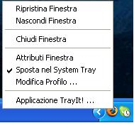
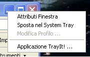

|
Introduzione
TrayIt! consente di salvare spazio prezione nella Barra delle Applicazioni per le finstre ridotte ad icona. Per ogni applicazione a cui si applica, TrayIt! crea un apiccola icona nel System Tray. (L'area del System Tray si trova vicino all'orologio). Quando la finestra dell'applicazione e ridotta ad icona, questa icona la rappresenta sulla Barra delle Applicazione al posto del normale "rettangolino".
TrayIt! è particolarmete utile per i programmi che funzionano in sottofondo per tutto il tempo, quali clienti di posta, Real Player, etc..
Usare TrayIt!
TrayIt! funziona su Windows 95/98/Me, NT/2000/XP/Vista e non
richiede alcuna installazione.
Basta semplicenete create una cartella ed inserirvi TrayIt!.exe e TrayIt!.dll. Quando TrayIt!
verrà avviato mostrerà una finestra con una breve spiegazione su come usarlo.
Si può scegliere di eseguire TrayIt! all'avvio del sistema selezionando "Opzioni" e
spuntando la casella "Esegui TrayIt! all'avvio".
|
  |
Opzioni principali
Si può personalizzare il funzionamento di TrayIt! selezionando le seguenti opzioni dal menù "Modifica/Opzioni" :
- Esegui TrayIt! all'avvio - crea un collegamento a TrayIt! nella
cartella Programmi/Esecuzione automatica.
- Usa il click singolo sull'icona nel tray - se disabilitata è necessario fare un doppio click
sull'icona nel System Tray per attivare l'applicazione.
- Raggruppa icone del tray simili per ciascuna applicazione - TrayIt! raggrupperà le finestre simili visualizzando nel tray una sola icona di accesso al gruppo.
- Riduci a icona quando in primo piano, ripristina quando in sotto fondo - con
questa opzione abilitata, cliccando sull icona nel System Tray la finestra associata verrà minimizzata
solo se già in primo piano, viceversa verrà messa in sottofondo.
Opzioni principali del profilo della finestra:
- Confrontare il 'pattern' sotto indicato con il nome della classe della finestra
- quando questa opzione viene abilitata si può specificare un 'pattern' che TrayIt! confronterà
con il titolo della finestra dell'applicazione. TrayIt! cercherà una sottostringa nel titolo della finestra che combaci con il'pattern'. TrayIt!
applica i 'patterns' da sinistra a destra e si ferma quando incontra la prima corrispondenza.
I 'patterns' non differenziano le maiuscole dalle minuscole. Sono ammessi i caratteri '*' e '?' come simboli 'jolly'.
Il carattere '^', come primo simbolo, inverte il 'pattern'. Il carattere '|' separe le alternative.
Esempio: il pattern Risorse del computer|Pannello di controllo specificato per la finestra di Esplora
farà si che nel tray vengano poste solo queste due cartelle.
- Minimizza la finestra alla creazione / quando TrayIt! è avviato - TrayIt! minimizzerà la finestra selezionata alla sua apertura. L'effetto di questa opzione è molto simile a selezionare "Esegui:Ridotta a icona" nel collegamento dell'applicazione. Da usare quando quest'ultimo metodo non funziona correttamente.
- Gestione applicazioni di tipo SDI come Excel, PowerPoint o MS Project TrayIt! gestirà correttamente applicazioni che hanno solo una finestra ma creano etichette multiple nella Barra delle Applicazioni.
Se vuoi avviare TrayIt! manualmente e vuoi evitare la comparsa della finestra di dialogo iniziale,
crea un collegamento a TrayIt! ed aggiungi il parametro /H.
TrayIt! è completamente LIBERO e se conosci un buon sito, sentiti libero
di 'uplodare' TrayIt!
ESCLUSIONE DI RESPONSABILITA` -- LEGGERE PRIMA DI INSTALLARE TRAYIT!
IL SOFTWARE È FORNITO "COSÌ COM'È", SENZA GARANZIE DI ALCUN TIPO, ESPRESSE O IMPLICITE, INCLUSE, A TITOLO ESEMPLIFICATIVO E NON LIMITATIVO, LE GARANZIE DI COMMERCIABILITÀ, IDONEITÀ A UN PARTICOLARE SCOPO E NON VIOLAZIONE DEI DIRITTI DI TERZI. IN NESSUN CASO IL TITOLARE O I TITOLARI DEL COPYRIGHT PREVISTI DAL PRESENTE AVVISO POTRANNO ESSERE RITENUTI RESPONSABILI DI ALCUNA RIVENDICAZIONE O DANNO SPECIALE INDIRETTO, CONSEGUENTE O DI ALTRO TIPO DERIVANTE DALLA PERDITA DI USO, DATI O PROFITTI IN UN'AZIONE DI CONTRATTO, NEGLIGENZA O ALTRO ILLECITO DERIVANTE DA O CONNESSO ALL'UTILIZZO O ALLE PRESTAZIONI DEL SOFTWARE.